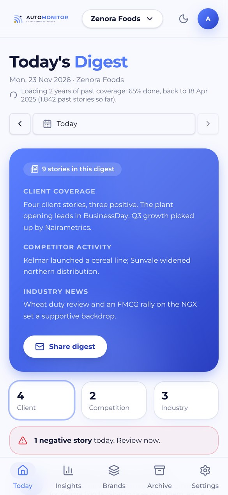
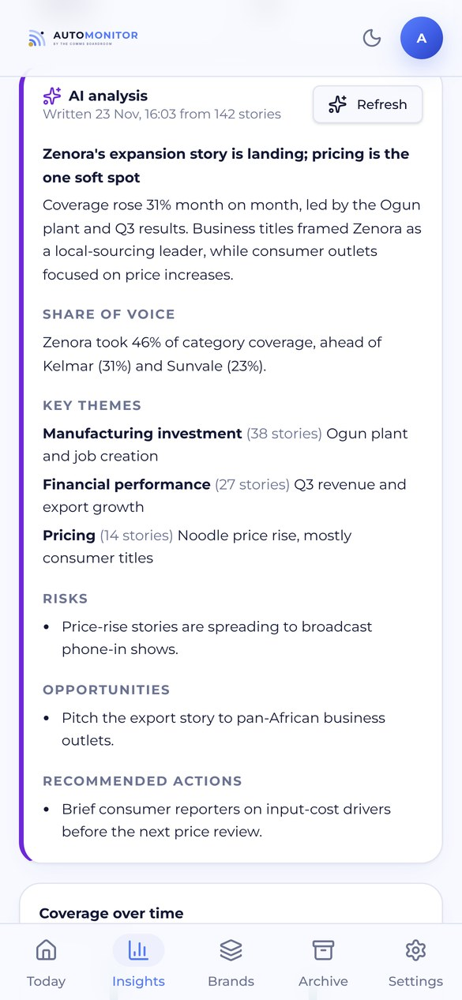
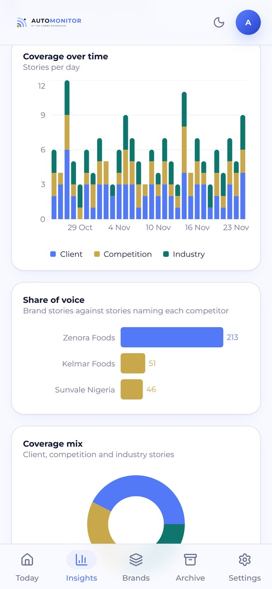
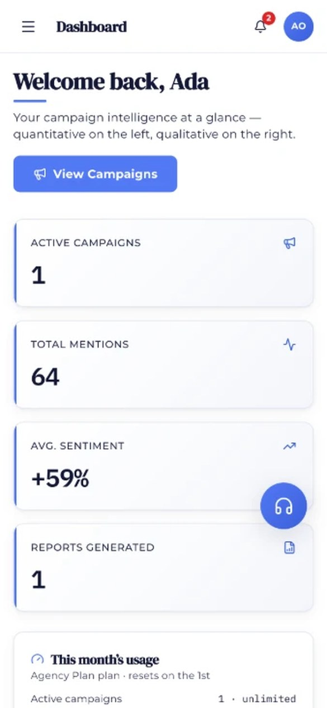
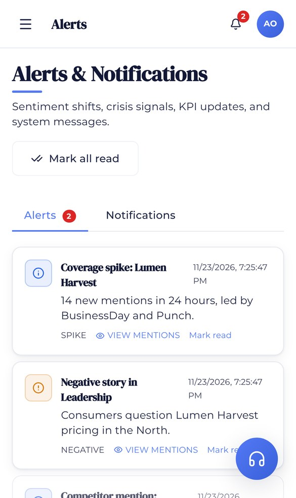
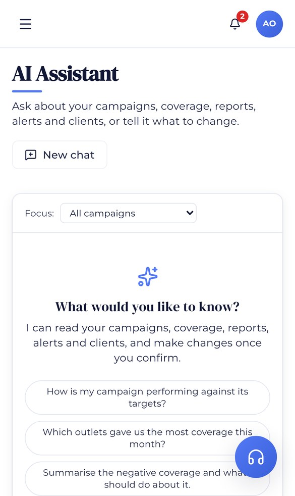

Proving PR works when information moves faster than ever, and AI is in the conversation.
Scan, choose Feed or Blog, and tell us what you think about:
Systematic tracking of every mention of a brand, issue or competitor across press, broadcast, online news, blogs and social media.
Turning those mentions into insight and a recommendation a decision-maker can act on.
What's being said. Every mention, every channel.
→Did it matter? Outcomes against goals, not just coverage.
→What to do next. A specific, actionable recommendation.
→Continuously, in real time. Always on, not a monthly report.
The analyst's job ends in an action, not a chart.
Every client, every boss, every budget meeting is asking. Can you answer with evidence?
Numbers that end in a transaction.
Pulling the qualitative out of the quantitative.
📰 The story broke in the morning paper
⏳ You had hours, even a day, to respond
🚪 A few editors decided what got published
✂️ Monitoring = cutting and filing clippings
📱 Anyone can publish, instantly
⚡ A post can trend in minutes
🗣️ The story is told before the press office wakes up
📊 Every comment, like and share is data
Start with Google Alerts and a spreadsheet. Scale with tools. Either way, the output is a structured log.
| Date | Source | Headline | Reach | Tone | Key message? |
|---|---|---|---|---|---|
| Mon | BusinessDay | Brand opens new plant | 4.2M | Positive | ✓ |
| Mon | Radio phone-in | Listeners ask about prices | 800k | Negative | ✗ |
| Tue | Blog | Factory tour review | 12k | Neutral | ✓ |
Counts, clips, mentions, reach: a record of output.
Message pull-through, sentiment shift, audience action, reputation movement.
① Set goals before you measure
② Measure outcomes, not just outputs
③ AVEs do not measure PR value
④ Social media is measurable like any channel
⑤ Be transparent and replicable
What we produced: coverage, content, reach delivered.
What the audience took away: awareness, understanding, sentiment.
What changed as a result: behaviour, trust, business results.
Your presence in the conversation vs the whole category
Your volume and tone vs named competitors
How much of your key message actually lands
Who is quoted, how often, how favourably
Brand A leads on volume, but is that volume positive? Intelligence answers the next question.
Search X, TikTok and Google by hand
Copy posts into a spreadsheet
Tag sentiment one by one
Report weekly, if there's time
Tools pull every mention, always on
Sentiment scored automatically
Topics clustered, spikes flagged
AI drafts the brief
A product-launch campaign: Objective → KPI → Source → Metric → Insight.
Build awareness for a new product line among urban consumers
60% positive sentiment share within 4 weeks of launch
Owned social (IG / X / LinkedIn) + earned press + social listening
Sentiment: 71% positive. Share of voice: 34% of category chatter
Click to reveal
Automated daily media monitoring for African PR agencies.
☀️ A daily digest: client, competitors, industry
🤖 AI analysis: themes, risks, recommended actions
📤 Share with the client in one click



From campaign brief to boardroom-ready report.
📄 Upload the brief, set objectives & keywords
📈 Quantitative + qualitative, aligned to AMEC
🔔 Alerts on spikes and negative stories
💬 An AI assistant that reads your campaigns



One sentence. A finding, not a metric dump.
The two or three numbers that prove it. No more.
Why it matters to the brand or business right now.
What we do next, and by when. The line people actually read.
🥤 A beverage client. A data report going to the regional boss.
📈 The boss had sent a projection earlier, and I built my report against it.
🤐 I should have asked a question. I didn't.
❌ The numbers I sent were wrong.
1. Mistakes are possible. Own them fast.
2. When data is going up the chain, ask before you send.
3. Check numbers against the source, not against an assumption.
People searched, clicked a link and read your story.
People ask ChatGPT, Gemini or Meta AI, and the answer describes your brand for you.
🔍 Brand mentions now happen inside AI conversations, so tracking them is tougher and may be more expensive.
🧠 Human judgement still matters: what it means, what to say, and when to stay silent.
What impact must you contribute?
If you can't answer in one sentence, it's monitoring dressed up as intelligence. Go one more step.